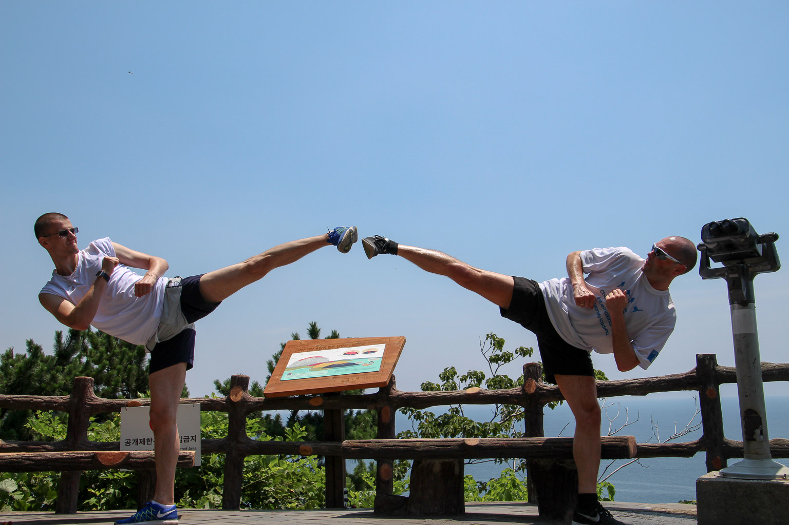
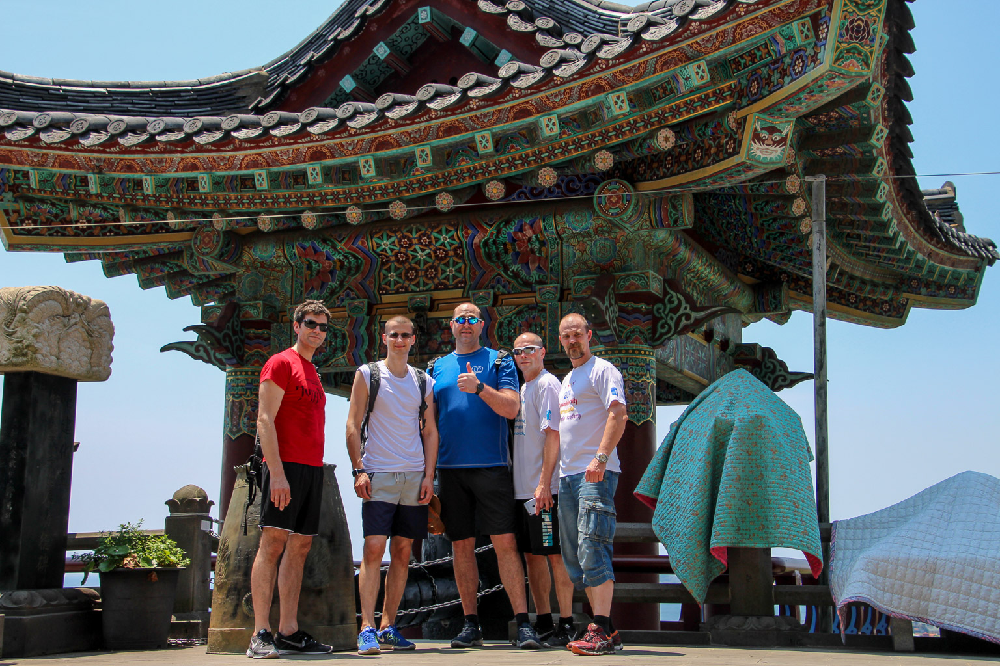
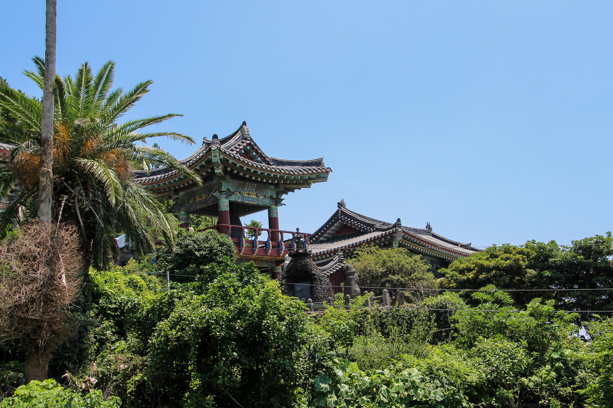

Innlegg
14. dagers treningssamling i Sør-Korea: Perfeksjonering i flere tusen år gammel kampsporttradisjon

I midten av august var en del av klubbens instruktører og elever på et 14. dagers trenings-, kultur- og ferieopphold i Taekwondos hjemland Sør-Korea. – Første uke var det kampsporttrening fire ganger om dagen på Chosun University i Gwangju, forteller instruktør Reinhardt G. Skøien i Ringerike Taekwondo. – For treningsglade sportsutøvere ble treningsoppholdet en perfeksjonering i en flere tusen år gammel kampsporttradisjon.
Av Trond Schieldrop
Årlig møtes internasjonale utøvere til Taekwondo samling på Chosun University i byen Gwangju. Fra Ringerike Taekwondo-klubb deltok Tor Brede, Geir, Artjom, Rune og Reinhardt. – De første treningene startet tidlig om morgenen og varte til sent på kvelden. Utøverne ble delt inn i puljer ut fra hvilken beltegrad de hadde. Her ble vi drillet i poomse, grunn- og kampteknikker, oppvisningsrelatert trening og Hapkido. Treningsoppholdet på Chosun University endte opp i en internasjonal poomse konkurranse hvor våre utøvere oppnådde gode resultater, forteller Reinhardt.
Hever det faglige og sportslige nivået
På Chosun University fikk vi trene med stormestere i Taekwondo som er mange ganger olympiske- og verdensmestre. – En slik treningssamling er med på å heve det faglige og sportslige nivået til hver enkelt utøver. Likeså viktig var den sosiale kontakten med andre internasjonale utøvere. Sist men ikke minst er det unikt å få anledning til å trene sporten i taekwondoens hjemland hvor vi fikk en kulturell bevisstgjøring av kampsportens betydning, sier Reinhardt. – Vi tar med oss hjem kunnskaper som vi nå kan videreformidle til våre utøvere i klubben.

Alle kan delta – Alle som ønsker å reise til Chosun University for å lære mer om Taekwondo, er hjertelig velkommen til å delta, sier Reinhardt. –Her får hver enkelt mulighet til å utvide sin egen taekwondokunnskap. Når det er sagt, er klubbens policy at våre instruktører skal delta på treningssamlinger i TTU-regi både nasjonalt og internasjonalt for å tilføre klubben treningsnyheter. Her står den årlige Sør-Korea samlingen i særklasse, hvor du kan utvide dine kampsportkunnskaper og få historisk innsikt i fremveksten av Taekwondo fra dynastienes behov for et militært kampsystem til dagens OL-sportsgren hvor det kjempes om edelt metall i flere disipliner. I feriemodus Etter den internasjonale Taekwondo samlingen i Gwangju fortsatte den norske delegasjonen til øya Jeju sør i landet. – Her gikk vi i feriemodus med kun morgentrening. Vi fikk omvisning i kulturelle severdigheter og bedre kunnskap om det kulturelle kampsportaspektet. Vi var også de siste dagene av oppholdet i Seoul hvor vi trente Shim Ki Shin (koreansk Ki Gong), besøkte taekwondohovedkvarteret Kukkiwon, turistseverdigheter og shoppet, avslutter Reinhardt.